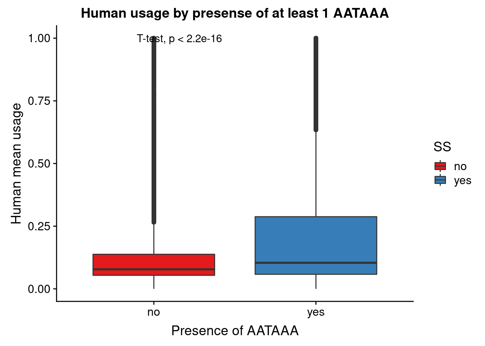
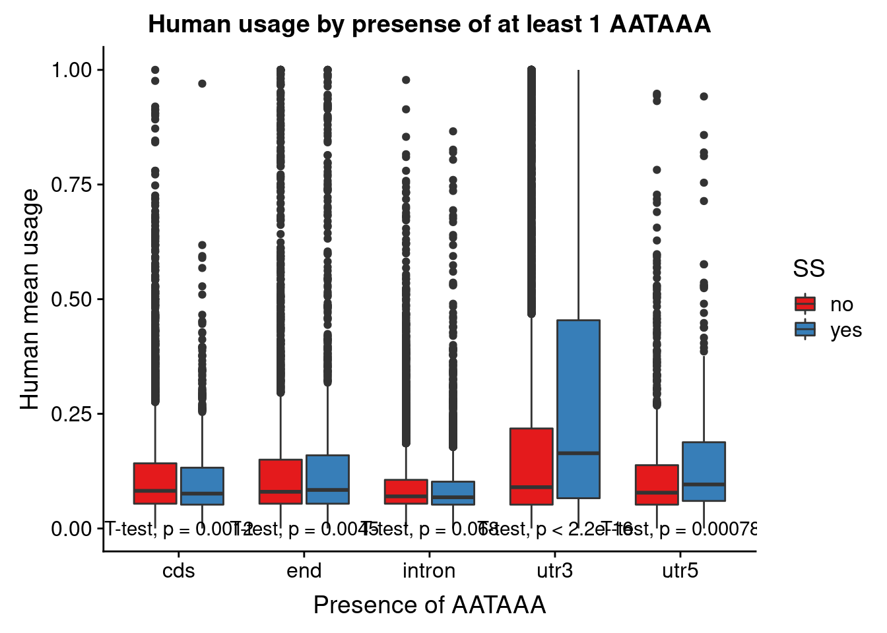
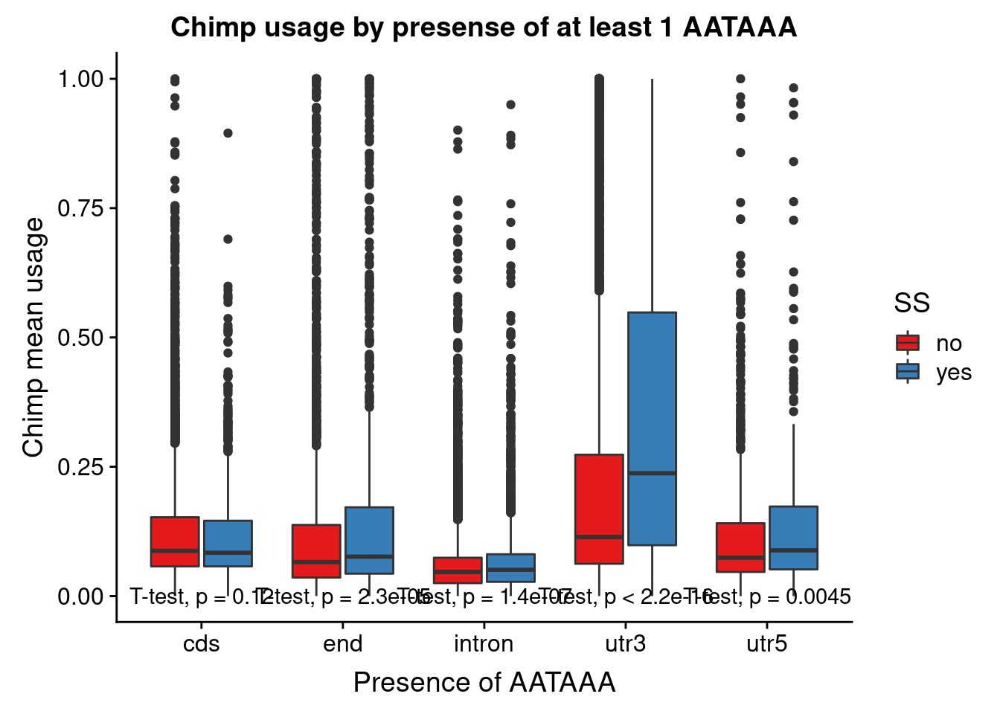
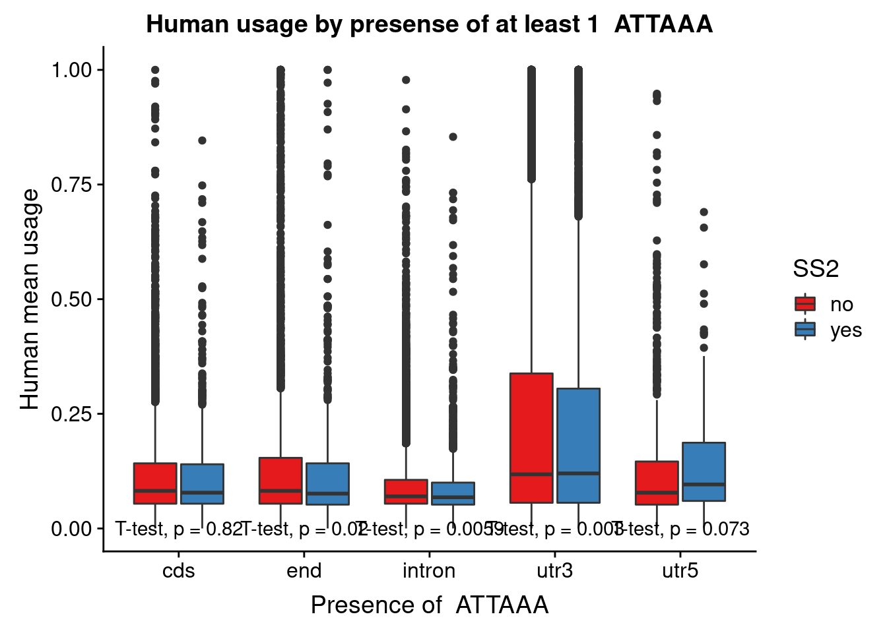
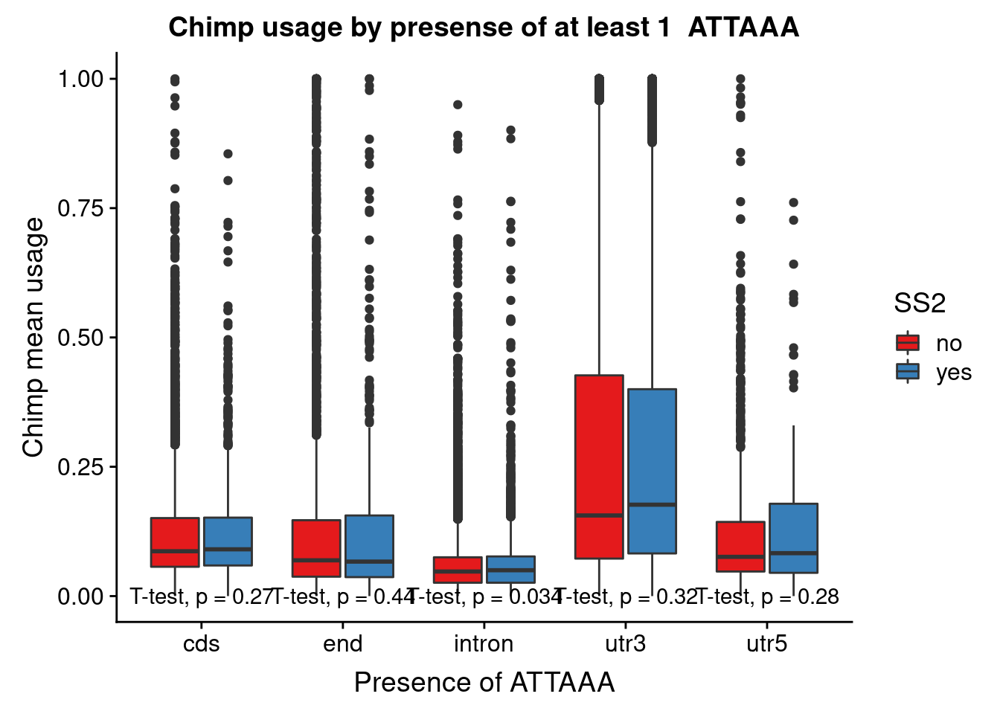
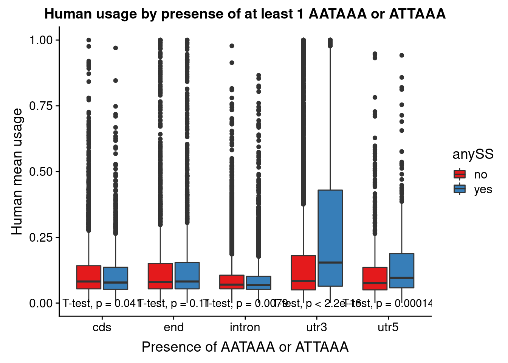
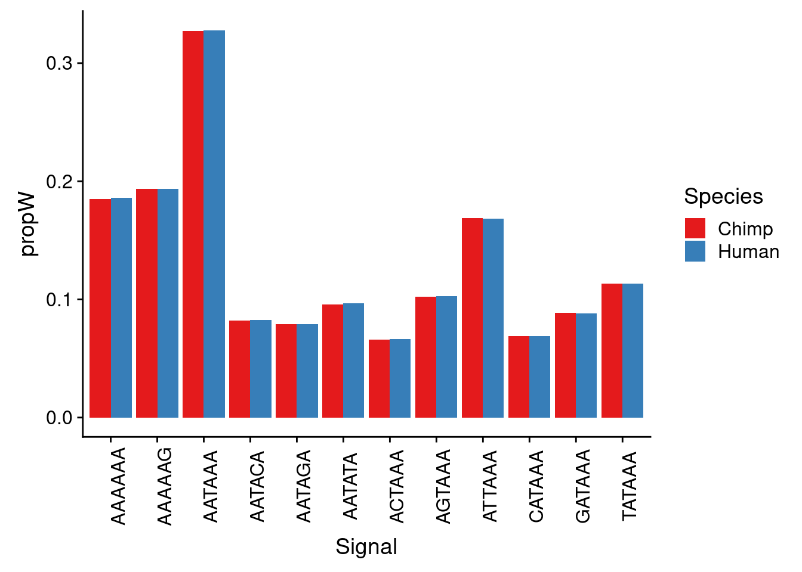
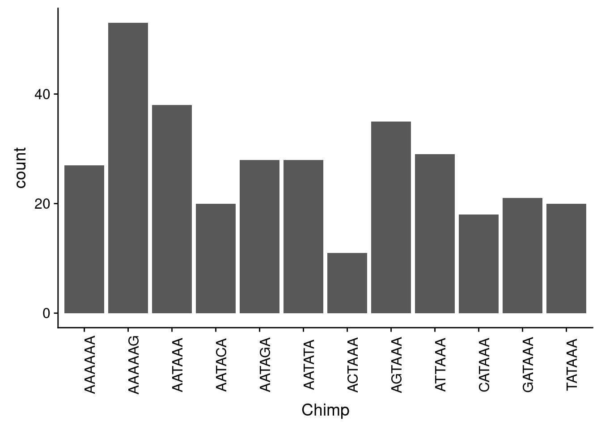
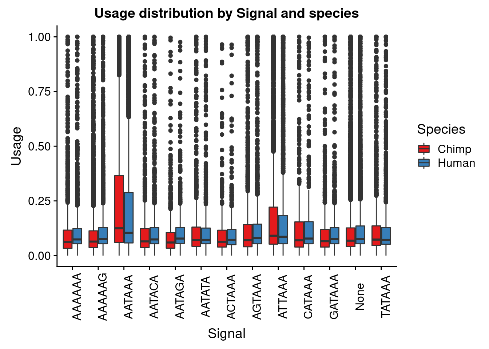

Signal Site Distribution Double filter
Briana Mittleman
1/21/2020
Last updated: 2020-01-22
Checks: 7 0
Knit directory: Comparative_APA/analysis/
This reproducible R Markdown analysis was created with workflowr (version 1.5.0). The Checks tab describes the reproducibility checks that were applied when the results were created. The Past versions tab lists the development history.
Great! Since the R Markdown file has been committed to the Git repository, you know the exact version of the code that produced these results.
Great job! The global environment was empty. Objects defined in the global environment can affect the analysis in your R Markdown file in unknown ways. For reproduciblity it’s best to always run the code in an empty environment.
The command set.seed(20190902) was run prior to running the code in the R Markdown file. Setting a seed ensures that any results that rely on randomness, e.g. subsampling or permutations, are reproducible.
Great job! Recording the operating system, R version, and package versions is critical for reproducibility.
Nice! There were no cached chunks for this analysis, so you can be confident that you successfully produced the results during this run.
Great job! Using relative paths to the files within your workflowr project makes it easier to run your code on other machines.
Great! You are using Git for version control. Tracking code development and connecting the code version to the results is critical for reproducibility. The version displayed above was the version of the Git repository at the time these results were generated.
Note that you need to be careful to ensure that all relevant files for the analysis have been committed to Git prior to generating the results (you can use wflow_publish or wflow_git_commit). workflowr only checks the R Markdown file, but you know if there are other scripts or data files that it depends on. Below is the status of the Git repository when the results were generated:
Ignored files:
Ignored: .DS_Store
Ignored: .Rhistory
Ignored: .Rproj.user/
Ignored: code/chimp_log/
Ignored: code/human_log/
Ignored: data/.DS_Store
Ignored: data/metadata_HCpanel.txt.sb-a5794dd2-i594qs/
Untracked files:
Untracked: ._.DS_Store
Untracked: Chimp/
Untracked: Human/
Untracked: analysis/CrossChimpThreePrime.Rmd
Untracked: analysis/DiffTransProtvsExpression.Rmd
Untracked: analysis/NormalizePheno_nuclear_DF.Rmd
Untracked: analysis/assessReadQual.Rmd
Untracked: analysis/diffExpressionPantro6.Rmd
Untracked: code/._ClassifyLeafviz.sh
Untracked: code/._Config_chimp.yaml
Untracked: code/._Config_chimp_full.yaml
Untracked: code/._Config_human.yaml
Untracked: code/._ConvertJunc2Bed.sh
Untracked: code/._CountNucleotides.py
Untracked: code/._CrossMapChimpRNA.sh
Untracked: code/._CrossMapThreeprime.sh
Untracked: code/._DiffSplice.sh
Untracked: code/._DiffSplicePlots.sh
Untracked: code/._DiffSplicePlots_gencode.sh
Untracked: code/._DiffSplice_gencode.sh
Untracked: code/._DiffSplice_removebad.sh
Untracked: code/._FindIntronForDomPAS.sh
Untracked: code/._FindIntronForDomPAS_DF.sh
Untracked: code/._GetMAPQscore.py
Untracked: code/._GetSecondaryMap.py
Untracked: code/._Lift5perPAS.sh
Untracked: code/._LiftFinalChimpJunc2Human.sh
Untracked: code/._LiftOrthoPAS2chimp.sh
Untracked: code/._MapBadSamples.sh
Untracked: code/._PAS_ATTAAA.sh
Untracked: code/._PAS_ATTAAA_df.sh
Untracked: code/._PAS_seqExpanded.sh
Untracked: code/._PASsequences.sh
Untracked: code/._PASsequences_DF.sh
Untracked: code/._PlotNuclearUsagebySpecies.R
Untracked: code/._PlotNuclearUsagebySpecies_DF.R
Untracked: code/._QuantMergedClusters.sh
Untracked: code/._ReverseLiftFilter.R
Untracked: code/._RunFixLeafCluster.sh
Untracked: code/._RunNegMCMediation.sh
Untracked: code/._RunNegMCMediationDF.sh
Untracked: code/._RunPosMCMediationDF.err
Untracked: code/._RunPosMCMediationDF.sh
Untracked: code/._Snakefile
Untracked: code/._SnakefilePAS
Untracked: code/._SnakefilePASfilt
Untracked: code/._SortIndexBadSamples.sh
Untracked: code/._bed215upbed.py
Untracked: code/._bed2SAF_gen.py
Untracked: code/._buildIndecpantro5
Untracked: code/._buildIndecpantro5.sh
Untracked: code/._buildLeafviz.sh
Untracked: code/._buildLeafviz_leadAnno.sh
Untracked: code/._buildStarIndex.sh
Untracked: code/._chimpChromprder.sh
Untracked: code/._chooseSignalSite.py
Untracked: code/._cleanbed2saf.py
Untracked: code/._cluster.json
Untracked: code/._cluster2bed.py
Untracked: code/._clusterLiftReverse.sh
Untracked: code/._clusterLiftReverse_removebad.sh
Untracked: code/._clusterLiftprimary.sh
Untracked: code/._clusterLiftprimary_removebad.sh
Untracked: code/._converBam2Junc.sh
Untracked: code/._converBam2Junc_removeBad.sh
Untracked: code/._extraSnakefiltpas
Untracked: code/._filter5percPAS.py
Untracked: code/._filterNumChroms.py
Untracked: code/._filterPASforMP.py
Untracked: code/._filterPostLift.py
Untracked: code/._fixExonFC.py
Untracked: code/._fixLeafCluster.py
Untracked: code/._fixLiftedJunc.py
Untracked: code/._fixUTRexonanno.py
Untracked: code/._formathg38Anno.py
Untracked: code/._formatpantro6Anno.py
Untracked: code/._getRNAseqMapStats.sh
Untracked: code/._hg19MapStats.sh
Untracked: code/._humanChromorder.sh
Untracked: code/._intersectLiftedPAS.sh
Untracked: code/._liftJunctionFiles.sh
Untracked: code/._liftPAS19to38.sh
Untracked: code/._liftedchimpJunc2human.sh
Untracked: code/._makeNuclearDapaplots.sh
Untracked: code/._makeNuclearDapaplots_DF.sh
Untracked: code/._makeSamplyGroupsHuman_TvN.py
Untracked: code/._mapRNAseqhg19.sh
Untracked: code/._mapRNAseqhg19_newPipeline.sh
Untracked: code/._maphg19.sh
Untracked: code/._maphg19_subjunc.sh
Untracked: code/._mediation_test.R
Untracked: code/._mergeChimp3prime_inhg38.sh
Untracked: code/._mergedBam2BW.sh
Untracked: code/._nameClusters.py
Untracked: code/._negativeMediation_montecarlo.R
Untracked: code/._negativeMediation_montecarloDF.R
Untracked: code/._numMultimap.py
Untracked: code/._overlapapaQTLPAS.sh
Untracked: code/._postiveMediation_montecarlo_DF.R
Untracked: code/._prepareCleanLiftedFC_5perc4LC.py
Untracked: code/._prepareLeafvizAnno.sh
Untracked: code/._preparePAS4lift.py
Untracked: code/._primaryLift.sh
Untracked: code/._processhg38exons.py
Untracked: code/._quantJunc.sh
Untracked: code/._quantJunc_TEST.sh
Untracked: code/._quantJunc_removeBad.sh
Untracked: code/._quantMerged_seperatly.sh
Untracked: code/._recLiftchim2human.sh
Untracked: code/._revLiftPAShg38to19.sh
Untracked: code/._reverseLift.sh
Untracked: code/._runCheckReverseLift.sh
Untracked: code/._runChimpDiffIso.sh
Untracked: code/._runCountNucleotides.sh
Untracked: code/._runFilterNumChroms.sh
Untracked: code/._runHumanDiffIso.sh
Untracked: code/._runNuclearDiffIso_DF.sh
Untracked: code/._runNuclearDifffIso.sh
Untracked: code/._runTotalDiffIso.sh
Untracked: code/._run_chimpverifybam.sh
Untracked: code/._run_verifyBam.sh
Untracked: code/._snakemake.batch
Untracked: code/._snakemakePAS.batch
Untracked: code/._snakemakePASchimp.batch
Untracked: code/._snakemakePAShuman.batch
Untracked: code/._snakemake_chimp.batch
Untracked: code/._snakemake_human.batch
Untracked: code/._snakemakefiltPAS.batch
Untracked: code/._snakemakefiltPAS_chimp
Untracked: code/._snakemakefiltPAS_chimp.sh
Untracked: code/._snakemakefiltPAS_human.sh
Untracked: code/._submit-snakemake-chimp.sh
Untracked: code/._submit-snakemake-human.sh
Untracked: code/._submit-snakemakePAS-chimp.sh
Untracked: code/._submit-snakemakePAS-human.sh
Untracked: code/._submit-snakemakefiltPAS-chimp.sh
Untracked: code/._submit-snakemakefiltPAS-human.sh
Untracked: code/._subset_diffisopheno_Nuclear_HvC.py
Untracked: code/._subset_diffisopheno_Nuclear_HvC_DF.py
Untracked: code/._subset_diffisopheno_Total_HvC.py
Untracked: code/._threeprimeOrthoFC.sh
Untracked: code/._transcriptDTplotsNuclear.sh
Untracked: code/._verifyBam4973.sh
Untracked: code/._verifyBam4973inHuman.sh
Untracked: code/._wrap_chimpverifybam.sh
Untracked: code/._wrap_verifyBam.sh
Untracked: code/._writeMergecode.py
Untracked: code/.snakemake/
Untracked: code/ClassifyLeafviz.sh
Untracked: code/Config_chimp.yaml
Untracked: code/Config_chimp_full.yaml
Untracked: code/Config_human.yaml
Untracked: code/ConvertJunc2Bed.err
Untracked: code/ConvertJunc2Bed.out
Untracked: code/ConvertJunc2Bed.sh
Untracked: code/CountNucleotides.py
Untracked: code/CrossMapChimpRNA.sh
Untracked: code/CrossMapThreeprime.sh
Untracked: code/CrossmapChimp3prime.err
Untracked: code/CrossmapChimp3prime.out
Untracked: code/CrossmapChimpRNA.err
Untracked: code/CrossmapChimpRNA.out
Untracked: code/DiffSplice.err
Untracked: code/DiffSplice.out
Untracked: code/DiffSplice.sh
Untracked: code/DiffSplicePlots.err
Untracked: code/DiffSplicePlots.out
Untracked: code/DiffSplicePlots.sh
Untracked: code/DiffSplicePlots_gencode.sh
Untracked: code/DiffSplice_gencode.sh
Untracked: code/DiffSplice_removebad.err
Untracked: code/DiffSplice_removebad.out
Untracked: code/DiffSplice_removebad.sh
Untracked: code/FilterReverseLift.err
Untracked: code/FilterReverseLift.out
Untracked: code/FindIntronForDomPAS.err
Untracked: code/FindIntronForDomPAS.out
Untracked: code/FindIntronForDomPAS.sh
Untracked: code/FindIntronForDomPAS_DF.sh
Untracked: code/GencodeDiffSplice.err
Untracked: code/GencodeDiffSplice.out
Untracked: code/GetMAPQscore.py
Untracked: code/GetSecondaryMap.py
Untracked: code/HchromOrder.err
Untracked: code/HchromOrder.out
Untracked: code/JunctionLift.err
Untracked: code/JunctionLift.out
Untracked: code/JunctionLiftFinalChimp.err
Untracked: code/JunctionLiftFinalChimp.out
Untracked: code/Lift5perPAS.sh
Untracked: code/Lift5perPASbed.err
Untracked: code/Lift5perPASbed.out
Untracked: code/LiftClustersFirst.err
Untracked: code/LiftClustersFirst.out
Untracked: code/LiftClustersFirst_remove.err
Untracked: code/LiftClustersFirst_remove.out
Untracked: code/LiftClustersSecond.err
Untracked: code/LiftClustersSecond.out
Untracked: code/LiftClustersSecond_remove.err
Untracked: code/LiftClustersSecond_remove.out
Untracked: code/LiftFinalChimpJunc2Human.sh
Untracked: code/LiftOrthoPAS2chimp.sh
Untracked: code/LiftorthoPAS.err
Untracked: code/LiftorthoPASt.out
Untracked: code/Log.out
Untracked: code/MapBadSamples.err
Untracked: code/MapBadSamples.out
Untracked: code/MapBadSamples.sh
Untracked: code/MapStats.err
Untracked: code/MapStats.out
Untracked: code/MergeClusters.err
Untracked: code/MergeClusters.out
Untracked: code/MergeClusters.sh
Untracked: code/PAS_ATTAAA.err
Untracked: code/PAS_ATTAAA.out
Untracked: code/PAS_ATTAAA.sh
Untracked: code/PAS_ATTAAADF.err
Untracked: code/PAS_ATTAAADF.out
Untracked: code/PAS_ATTAAA_df.sh
Untracked: code/PAS_seqExpanded.sh
Untracked: code/PAS_sequence.err
Untracked: code/PAS_sequence.out
Untracked: code/PAS_sequenceDF.err
Untracked: code/PAS_sequenceDF.out
Untracked: code/PASexpanded_sequenceDF.err
Untracked: code/PASexpanded_sequenceDF.out
Untracked: code/PASsequences.sh
Untracked: code/PASsequences_DF.sh
Untracked: code/PlotNuclearUsagebySpecies.R
Untracked: code/PlotNuclearUsagebySpecies_DF.R
Untracked: code/QuantMergeClusters
Untracked: code/QuantMergeClusters.err
Untracked: code/QuantMergeClusters.out
Untracked: code/QuantMergedClusters.sh
Untracked: code/Rev_liftoverPAShg19to38.err
Untracked: code/Rev_liftoverPAShg19to38.out
Untracked: code/ReverseLiftFilter.R
Untracked: code/RunFixCluster.err
Untracked: code/RunFixCluster.out
Untracked: code/RunFixLeafCluster.sh
Untracked: code/RunNegMCMediation.err
Untracked: code/RunNegMCMediation.sh
Untracked: code/RunNegMCMediationDF.err
Untracked: code/RunNegMCMediationDF.out
Untracked: code/RunNegMCMediationDF.sh
Untracked: code/RunNegMCMediationr.out
Untracked: code/RunPosMCMediation.err
Untracked: code/RunPosMCMediation.sh
Untracked: code/RunPosMCMediationDF.err
Untracked: code/RunPosMCMediationDF.out
Untracked: code/RunPosMCMediationDF.sh
Untracked: code/RunPosMCMediationr.out
Untracked: code/SAF215upbed_gen.py
Untracked: code/Snakefile
Untracked: code/SnakefilePAS
Untracked: code/SnakefilePASfilt
Untracked: code/SortIndexBadSamples.err
Untracked: code/SortIndexBadSamples.out
Untracked: code/SortIndexBadSamples.sh
Untracked: code/TotalTranscriptDTplot.err
Untracked: code/TotalTranscriptDTplot.out
Untracked: code/Upstream10Bases_general.py
Untracked: code/apaQTLsnake.err
Untracked: code/apaQTLsnake.out
Untracked: code/apaQTLsnakePAS.err
Untracked: code/apaQTLsnakePAS.out
Untracked: code/apaQTLsnakePAShuman.err
Untracked: code/bam2junc.err
Untracked: code/bam2junc.out
Untracked: code/bam2junc_remove.err
Untracked: code/bam2junc_remove.out
Untracked: code/bed215upbed.py
Untracked: code/bed2SAF_gen.py
Untracked: code/bed2saf.py
Untracked: code/bg_to_cov.py
Untracked: code/buildIndecpantro5
Untracked: code/buildIndecpantro5.sh
Untracked: code/buildLeafviz.err
Untracked: code/buildLeafviz.out
Untracked: code/buildLeafviz.sh
Untracked: code/buildLeafviz_leadAnno.sh
Untracked: code/buildLeafviz_leafanno.err
Untracked: code/buildLeafviz_leafanno.out
Untracked: code/buildStarIndex.sh
Untracked: code/callPeaksYL.py
Untracked: code/chimpChromprder.sh
Untracked: code/chooseAnno2Bed.py
Untracked: code/chooseAnno2SAF.py
Untracked: code/chooseSignalSite.py
Untracked: code/chromOrder.err
Untracked: code/chromOrder.out
Untracked: code/classifyLeafviz.err
Untracked: code/classifyLeafviz.out
Untracked: code/cleanbed2saf.py
Untracked: code/cluster.json
Untracked: code/cluster2bed.py
Untracked: code/clusterLiftReverse.sh
Untracked: code/clusterLiftReverse_removebad.sh
Untracked: code/clusterLiftprimary.sh
Untracked: code/clusterLiftprimary_removebad.sh
Untracked: code/clusterPAS.json
Untracked: code/clusterfiltPAS.json
Untracked: code/comands2Mege.sh
Untracked: code/converBam2Junc.sh
Untracked: code/converBam2Junc_removeBad.sh
Untracked: code/convertNumeric.py
Untracked: code/environment.yaml
Untracked: code/extraSnakefiltpas
Untracked: code/filter5perc.R
Untracked: code/filter5percPAS.py
Untracked: code/filter5percPheno.py
Untracked: code/filterBamforMP.pysam2_gen.py
Untracked: code/filterJuncChroms.err
Untracked: code/filterJuncChroms.out
Untracked: code/filterMissprimingInNuc10_gen.py
Untracked: code/filterNumChroms.py
Untracked: code/filterPASforMP.py
Untracked: code/filterPostLift.py
Untracked: code/filterSAFforMP_gen.py
Untracked: code/filterSortBedbyCleanedBed_gen.R
Untracked: code/filterpeaks.py
Untracked: code/fixExonFC.py
Untracked: code/fixFChead.py
Untracked: code/fixFChead_bothfrac.py
Untracked: code/fixLeafCluster.py
Untracked: code/fixLiftedJunc.py
Untracked: code/fixUTRexonanno.py
Untracked: code/formathg38Anno.py
Untracked: code/generateStarIndex.err
Untracked: code/generateStarIndex.out
Untracked: code/generateStarIndexHuman.err
Untracked: code/generateStarIndexHuman.out
Untracked: code/getRNAseqMapStats.sh
Untracked: code/hg19MapStats.err
Untracked: code/hg19MapStats.out
Untracked: code/hg19MapStats.sh
Untracked: code/humanChromorder.sh
Untracked: code/humanFiles
Untracked: code/intersectAnno.err
Untracked: code/intersectAnno.out
Untracked: code/intersectAnnoExt.err
Untracked: code/intersectAnnoExt.out
Untracked: code/intersectLiftedPAS.sh
Untracked: code/leafcutter_merge_regtools_redo.py
Untracked: code/liftJunctionFiles.sh
Untracked: code/liftPAS19to38.sh
Untracked: code/liftoverPAShg19to38.err
Untracked: code/liftoverPAShg19to38.out
Untracked: code/log/
Untracked: code/make5percPeakbed.py
Untracked: code/makeFileID.py
Untracked: code/makeNuclearDapaplots.sh
Untracked: code/makeNuclearDapaplots_DF.sh
Untracked: code/makeNuclearPlots.err
Untracked: code/makeNuclearPlots.out
Untracked: code/makeNuclearPlotsDF.err
Untracked: code/makeNuclearPlotsDF.out
Untracked: code/makePheno.py
Untracked: code/makeSamplyGroupsChimp_TvN.py
Untracked: code/makeSamplyGroupsHuman_TvN.py
Untracked: code/mapRNAseqhg19.sh
Untracked: code/mapRNAseqhg19_newPipeline.sh
Untracked: code/maphg19.err
Untracked: code/maphg19.out
Untracked: code/maphg19.sh
Untracked: code/maphg19_new.err
Untracked: code/maphg19_new.out
Untracked: code/maphg19_sub.err
Untracked: code/maphg19_sub.out
Untracked: code/maphg19_subjunc.sh
Untracked: code/mediation_test.R
Untracked: code/merge.err
Untracked: code/mergeChimp3prime_inhg38.sh
Untracked: code/merge_leafcutter_clusters_redo.py
Untracked: code/mergeandsort_ChimpinHuman.err
Untracked: code/mergeandsort_ChimpinHuman.out
Untracked: code/mergedBam2BW.sh
Untracked: code/mergedbam2bw.err
Untracked: code/mergedbam2bw.out
Untracked: code/nameClusters.py
Untracked: code/namePeaks.py
Untracked: code/negativeMediation_montecarlo.R
Untracked: code/negativeMediation_montecarloDF.R
Untracked: code/nuclearTranscriptDTplot.err
Untracked: code/nuclearTranscriptDTplot.out
Untracked: code/numMultimap.py
Untracked: code/overlapPAS.err
Untracked: code/overlapPAS.out
Untracked: code/overlapapaQTLPAS.sh
Untracked: code/overlapapaQTLPAS_extended.sh
Untracked: code/overlapapaQTLPAS_samples.sh
Untracked: code/peak2PAS.py
Untracked: code/pheno2countonly.R
Untracked: code/postiveMediation_montecarlo.R
Untracked: code/postiveMediation_montecarlo_DF.R
Untracked: code/prepareAnnoLeafviz.err
Untracked: code/prepareAnnoLeafviz.out
Untracked: code/prepareCleanLiftedFC_5perc4LC.py
Untracked: code/prepareLeafvizAnno.sh
Untracked: code/preparePAS4lift.py
Untracked: code/prepare_phenotype_table.py
Untracked: code/primaryLift.err
Untracked: code/primaryLift.out
Untracked: code/primaryLift.sh
Untracked: code/processhg38exons.py
Untracked: code/quantJunc.sh
Untracked: code/quantJunc_TEST.sh
Untracked: code/quantJunc_removeBad.sh
Untracked: code/quantLiftedPAS.err
Untracked: code/quantLiftedPAS.out
Untracked: code/quantLiftedPAS.sh
Untracked: code/quatJunc.err
Untracked: code/quatJunc.out
Untracked: code/recChimpback2Human.err
Untracked: code/recChimpback2Human.out
Untracked: code/recLiftchim2human.sh
Untracked: code/revLift.err
Untracked: code/revLift.out
Untracked: code/revLiftPAShg38to19.sh
Untracked: code/reverseLift.sh
Untracked: code/runCheckReverseLift.sh
Untracked: code/runChimpDiffIso.sh
Untracked: code/runCountNucleotides.err
Untracked: code/runCountNucleotides.out
Untracked: code/runCountNucleotides.sh
Untracked: code/runCountNucleotidesPantro6.err
Untracked: code/runCountNucleotidesPantro6.out
Untracked: code/runCountNucleotides_pantro6.sh
Untracked: code/runFilterNumChroms.sh
Untracked: code/runHumanDiffIso.sh
Untracked: code/runNuclearDiffIso_DF.sh
Untracked: code/runNuclearDifffIso.sh
Untracked: code/runTotalDiffIso.sh
Untracked: code/run_Chimpleafcutter_ds.err
Untracked: code/run_Chimpleafcutter_ds.out
Untracked: code/run_Chimpverifybam.err
Untracked: code/run_Chimpverifybam.out
Untracked: code/run_Humanleafcutter_ds.err
Untracked: code/run_Humanleafcutter_ds.out
Untracked: code/run_Nuclearleafcutter_ds.err
Untracked: code/run_Nuclearleafcutter_ds.out
Untracked: code/run_Nuclearleafcutter_dsDF.err
Untracked: code/run_Nuclearleafcutter_dsDF.out
Untracked: code/run_Totalleafcutter_ds.err
Untracked: code/run_Totalleafcutter_ds.out
Untracked: code/run_chimpverifybam.sh
Untracked: code/run_verifyBam.sh
Untracked: code/run_verifybam.err
Untracked: code/run_verifybam.out
Untracked: code/slurm-62824013.out
Untracked: code/slurm-62825841.out
Untracked: code/slurm-62826116.out
Untracked: code/slurm-64108209.out
Untracked: code/slurm-64108521.out
Untracked: code/slurm-64108557.out
Untracked: code/snakePASChimp.err
Untracked: code/snakePASChimp.out
Untracked: code/snakePAShuman.out
Untracked: code/snakemake.batch
Untracked: code/snakemakeChimp.err
Untracked: code/snakemakeChimp.out
Untracked: code/snakemakeHuman.err
Untracked: code/snakemakeHuman.out
Untracked: code/snakemakePAS.batch
Untracked: code/snakemakePASFiltChimp.err
Untracked: code/snakemakePASFiltChimp.out
Untracked: code/snakemakePASFiltHuman.err
Untracked: code/snakemakePASFiltHuman.out
Untracked: code/snakemakePASchimp.batch
Untracked: code/snakemakePAShuman.batch
Untracked: code/snakemake_chimp.batch
Untracked: code/snakemake_human.batch
Untracked: code/snakemakefiltPAS.batch
Untracked: code/snakemakefiltPAS_chimp.sh
Untracked: code/snakemakefiltPAS_human.sh
Untracked: code/submit-snakemake-chimp.sh
Untracked: code/submit-snakemake-human.sh
Untracked: code/submit-snakemakePAS-chimp.sh
Untracked: code/submit-snakemakePAS-human.sh
Untracked: code/submit-snakemakefiltPAS-chimp.sh
Untracked: code/submit-snakemakefiltPAS-human.sh
Untracked: code/subset_diffisopheno.py
Untracked: code/subset_diffisopheno_Chimp_tvN.py
Untracked: code/subset_diffisopheno_Huma_tvN.py
Untracked: code/subset_diffisopheno_Nuclear_HvC.py
Untracked: code/subset_diffisopheno_Nuclear_HvC_DF.py
Untracked: code/subset_diffisopheno_Total_HvC.py
Untracked: code/test
Untracked: code/threeprimeOrthoFC.out
Untracked: code/threeprimeOrthoFC.sh
Untracked: code/threeprimeOrthoFCcd.err
Untracked: code/transcriptDTplotsNuclear.sh
Untracked: code/transcriptDTplotsTotal.sh
Untracked: code/verifyBam4973.sh
Untracked: code/verifyBam4973inHuman.sh
Untracked: code/verifybam4973.err
Untracked: code/verifybam4973.out
Untracked: code/verifybam4973HumanMap.err
Untracked: code/verifybam4973HumanMap.out
Untracked: code/wrap_Chimpverifybam.err
Untracked: code/wrap_Chimpverifybam.out
Untracked: code/wrap_chimpverifybam.sh
Untracked: code/wrap_verifyBam.sh
Untracked: code/wrap_verifybam.err
Untracked: code/wrap_verifybam.out
Untracked: code/writeMergecode.py
Untracked: data/._.DS_Store
Untracked: data/._HC_filenames.txt
Untracked: data/._HC_filenames.txt.sb-4426323c-IKIs0S
Untracked: data/._HC_filenames.xlsx
Untracked: data/._MapPantro6_meta.txt
Untracked: data/._MapPantro6_meta.txt.sb-a5794dd2-Cskmlm
Untracked: data/._MapPantro6_meta.xlsx
Untracked: data/._OppositeSpeciesMap.txt
Untracked: data/._OppositeSpeciesMap.txt.sb-a5794dd2-mayWJf
Untracked: data/._OppositeSpeciesMap.xlsx
Untracked: data/._RNASEQ_metadata.txt
Untracked: data/._RNASEQ_metadata.txt.sb-4426323c-TE4ns3
Untracked: data/._RNASEQ_metadata.txt.sb-51f67ae1-HXp7Gq
Untracked: data/._RNASEQ_metadata_2Removed.txt
Untracked: data/._RNASEQ_metadata_2Removed.txt.sb-4426323c-a4lBwx
Untracked: data/._RNASEQ_metadata_2Removed.xlsx
Untracked: data/._RNASEQ_metadata_stranded.txt
Untracked: data/._RNASEQ_metadata_stranded.txt.sb-a5794dd2-D659m2
Untracked: data/._RNASEQ_metadata_stranded.txt.sb-a5794dd2-ImNMoY
Untracked: data/._RNASEQ_metadata_stranded.txt.sb-e4bf31f0-ZGnGgl
Untracked: data/._RNASEQ_metadata_stranded.xlsx
Untracked: data/._metadata_HCpanel.txt
Untracked: data/._metadata_HCpanel.txt.sb-a3d92a2d-b9cYoF
Untracked: data/._metadata_HCpanel.txt.sb-a5794dd2-i594qs
Untracked: data/._metadata_HCpanel.txt.sb-f4823d1e-qihGek
Untracked: data/._metadata_HCpanel.xlsx
Untracked: data/._metadata_HCpanel_frompantro5.xlsx
Untracked: data/._~$RNASEQ_metadata.xlsx
Untracked: data/._~$metadata_HCpanel.xlsx
Untracked: data/._.xlsx
Untracked: data/CompapaQTLpas/
Untracked: data/DTmatrix/
Untracked: data/DiffExpression/
Untracked: data/DiffIso_Nuclear/
Untracked: data/DiffIso_Nuclear_DF/
Untracked: data/DiffIso_Total/
Untracked: data/DiffSplice/
Untracked: data/DiffSplice_liftedJunc/
Untracked: data/DiffSplice_removeBad/
Untracked: data/DominantPAS/
Untracked: data/DominantPAS_DF/
Untracked: data/EvalPantro5/
Untracked: data/HC_filenames.txt
Untracked: data/HC_filenames.xlsx
Untracked: data/Khan_prot/
Untracked: data/Li_eqtls/
Untracked: data/MapPantro6_meta.txt
Untracked: data/MapPantro6_meta.xlsx
Untracked: data/MapStats/
Untracked: data/NormalizedClusters/
Untracked: data/NuclearHvC/
Untracked: data/NuclearHvC_DF/
Untracked: data/OppositeSpeciesMap.txt
Untracked: data/OppositeSpeciesMap.xlsx
Untracked: data/OverlapBenchmark/
Untracked: data/PAS/
Untracked: data/PAS_doubleFilter/
Untracked: data/Peaks_5perc/
Untracked: data/Pheno_5perc/
Untracked: data/Pheno_5perc_DF_nuclear/
Untracked: data/Pheno_5perc_nuclear/
Untracked: data/Pheno_5perc_nuclear_old/
Untracked: data/Pheno_5perc_total/
Untracked: data/RNASEQ_metadata.txt
Untracked: data/RNASEQ_metadata_2Removed.txt
Untracked: data/RNASEQ_metadata_2Removed.xlsx
Untracked: data/RNASEQ_metadata_stranded.txt
Untracked: data/RNASEQ_metadata_stranded.txt.sb-e4bf31f0-ZGnGgl/
Untracked: data/RNASEQ_metadata_stranded.xlsx
Untracked: data/SignalSites/
Untracked: data/SignalSites_doublefilter/
Untracked: data/Threeprime2Ortho/
Untracked: data/TotalHvC/
Untracked: data/TwoBadSampleAnalysis/
Untracked: data/Wang_ribo/
Untracked: data/apaQTLGenes/
Untracked: data/chainFiles/
Untracked: data/cleanPeaks_anno/
Untracked: data/cleanPeaks_byspecies/
Untracked: data/cleanPeaks_lifted/
Untracked: data/files4viz_nuclear/
Untracked: data/files4viz_nuclear_DF/
Untracked: data/leafviz/
Untracked: data/liftover_files/
Untracked: data/mediation/
Untracked: data/mediation_DF/
Untracked: data/metadata_HCpanel.txt
Untracked: data/metadata_HCpanel.xlsx
Untracked: data/metadata_HCpanel_frompantro5.txt
Untracked: data/metadata_HCpanel_frompantro5.xlsx
Untracked: data/primaryLift/
Untracked: data/reverseLift/
Untracked: data/~$RNASEQ_metadata.xlsx
Untracked: data/~$metadata_HCpanel.xlsx
Untracked: data/.xlsx
Untracked: output/dtPlots/
Untracked: projectNotes.Rmd
Unstaged changes:
Modified: analysis/ExploredAPA.Rmd
Modified: analysis/OppositeMap.Rmd
Modified: analysis/annotationInfo.Rmd
Modified: analysis/comp2apaQTLPAS.Rmd
Modified: analysis/correlationPhenos.Rmd
Modified: analysis/establishCutoffs.Rmd
Modified: analysis/investigatePantro5.Rmd
Modified: analysis/multiMap.Rmd
Modified: analysis/speciesSpecific.Rmd
Note that any generated files, e.g. HTML, png, CSS, etc., are not included in this status report because it is ok for generated content to have uncommitted changes.
These are the previous versions of the R Markdown and HTML files. If you’ve configured a remote Git repository (see ?wflow_git_remote), click on the hyperlinks in the table below to view them.
| File | Version | Author | Date | Message |
|---|---|---|---|---|
| Rmd | c3a9af5 | brimittleman | 2020-01-23 | add all ss and choose 1 |
| html | f3aa6b1 | brimittleman | 2020-01-22 | Build site. |
| Rmd | ed5a6a0 | brimittleman | 2020-01-22 | add all SS |
| html | 5525b39 | brimittleman | 2020-01-21 | Build site. |
| Rmd | 2e66af9 | brimittleman | 2020-01-21 | add ss and PAS num DF |
Top 2 SS
In this analysis I will look at the signal site distributions for the human and chimp PAS I have called.
library(ggpubr)Loading required package: ggplot2Loading required package: magrittrlibrary(workflowr)This is workflowr version 1.5.0
Run ?workflowr for help getting startedlibrary(tidyverse)── Attaching packages ──────────────────────────────────────────────────────────────────────────────────────────── tidyverse 1.2.1 ──✔ tibble 2.1.1 ✔ purrr 0.3.2
✔ tidyr 0.8.3 ✔ dplyr 0.8.0.1
✔ readr 1.3.1 ✔ stringr 1.3.1
✔ tibble 2.1.1 ✔ forcats 0.3.0 ── Conflicts ─────────────────────────────────────────────────────────────────────────────────────────────── tidyverse_conflicts() ──
✖ tidyr::extract() masks magrittr::extract()
✖ dplyr::filter() masks stats::filter()
✖ dplyr::lag() masks stats::lag()
✖ purrr::set_names() masks magrittr::set_names()I am looking at 200 base pair regions for each pas. I will look for the sequence in these for now and then refine the search.
I can use bedtools nuc on both to get the sequences for the bed files in ../data/PAS.
mkdir ../data/SignalSites_doublefilter
sbatch PASsequences_DF.shThe way I did this it flipped the - strand and assayed the correct strand sequence. I will still have to make everything upper case.
Before I use python to find the occurances. I will look at the results because I gave the AATAAA pattern to the nuc program to assay.
First i have to remove the # in each file
humanRawout=read.table("../data/SignalSites_doublefilter/PAS_doublefilter_either_HumanCoordHummanUsage_nuc.txt", stringsAsFactors = F, header = T) %>% mutate(SS=ifelse(X17_user_patt_count>=1, "yes", "no"))
ChimpRawout=read.table("../data/SignalSites_doublefilter/PAS_doublefilter_either_ChimpCoordChimpUsage_nuc.txt", stringsAsFactors = F, header = T)%>% mutate(SS=ifelse(X17_user_patt_count>=1, "yes", "no"))Histogram for the results:
ggplot(humanRawout,aes(x=X17_user_patt_count)) + geom_bar(aes(y=..prop..)) +labs(title="Distribution of AATAAA pattern Human")
| Version | Author | Date |
|---|---|---|
| 5525b39 | brimittleman | 2020-01-21 |
ggplot(ChimpRawout,aes(x=X17_user_patt_count)) + geom_bar(aes(y=..prop..))+labs(title="Distribution of AATAAA pattern Chimps")
| Version | Author | Date |
|---|---|---|
| 5525b39 | brimittleman | 2020-01-21 |
See if yes no segragates with usage:
ggplot(humanRawout,aes(x=SS,y=X5_usercol,by=SS, fill=SS)) + geom_boxplot() + labs(x="Presence of AATAAA", y="Human mean usage",title="Human usage by presense of at least 1 AATAAA") + scale_fill_brewer(palette = "Dark2") + stat_compare_means(method = "t.test")
| Version | Author | Date |
|---|---|---|
| 5525b39 | brimittleman | 2020-01-21 |
ggplot(ChimpRawout,aes(x=SS,y=X5_usercol,by=SS, fill=SS)) + geom_boxplot() + labs(x="Presence of AATAAA", y="Chimp mean usage",title="Chimp usage by presense of at least 1 AATAAA") + scale_fill_brewer(palette = "Dark2") + stat_compare_means(method = "t.test")
| Version | Author | Date |
|---|---|---|
| 5525b39 | brimittleman | 2020-01-21 |
Look at location data and bring this in.
Loc=read.table("../data/PAS_doubleFilter/PAS_10perc_either_HumanCoord_BothUsage_meta_doubleFilter.txt", header = T, stringsAsFactors = F) %>% rename("X4_usercol"=PAS) %>% dplyr::select(X4_usercol,loc)
ChimpRawout_withloc=ChimpRawout %>% inner_join(Loc, by="X4_usercol") %>% filter(loc!="008559")
humanRawout_withloc=humanRawout%>% inner_join(Loc, by="X4_usercol") %>% filter(loc!="008559")ggplot(humanRawout_withloc,aes(x=loc,y=X5_usercol,by=SS, fill=SS)) + geom_boxplot() + labs(x="Presence of AATAAA", y="Human mean usage",title="Human usage by presense of at least 1 AATAAA") + scale_fill_brewer(palette = "Dark2") + stat_compare_means(method = "t.test",label.y.npc = "bottom")
| Version | Author | Date |
|---|---|---|
| 5525b39 | brimittleman | 2020-01-21 |
ggplot(ChimpRawout_withloc,aes(x=loc,y=X5_usercol,by=SS, fill=SS)) + geom_boxplot() + labs(x="Presence of AATAAA", y="Chimp mean usage",title="Chimp usage by presense of at least 1 AATAAA") + scale_fill_brewer(palette = "Dark2") + stat_compare_means(method = "t.test",
label.y.npc = "bottom")
| Version | Author | Date |
|---|---|---|
| 5525b39 | brimittleman | 2020-01-21 |
I can run the nuc command again for the other doninant signal site I found in the apaQTL analysis (ATTAAA), I can join the results.
sbatch PAS_ATTAAA_df.shremove #
human_ATTAAA=read.table("../data/SignalSites_doublefilter/PAS_doublefilter_either_HumanCoordHummanUsage_ATTAAA.txt",stringsAsFactors = F,header = T) %>% mutate(SS2=ifelse(X17_user_patt_count>=1, "yes", "no"))
chimp_ATTAAA=read.table("../data/SignalSites_doublefilter/PAS_doublefilter_either_ChimpCoordChimpUsage_ATTAAA.txt",stringsAsFactors = F,header = T) %>% mutate(SS2=ifelse(X17_user_patt_count>=1, "yes", "no"))
human_both=human_ATTAAA %>% inner_join(humanRawout_withloc, by=c("X1_usercol", "X2_usercol", "X3_usercol", "X4_usercol", "X5_usercol", "X6_usercol", "X7_pct_at", "X8_pct_gc", "X9_num_A", "X10_num_C", "X11_num_G", "X12_num_T", "X13_num_N", "X14_num_oth", "X15_seq_len", "X16_seq")) %>% mutate(anySS=ifelse(SS == "yes" | SS2 =="yes", "yes", "no"))
chimp_both=chimp_ATTAAA %>% inner_join(ChimpRawout_withloc, by=c("X1_usercol", "X2_usercol", "X3_usercol", "X4_usercol", "X5_usercol", "X6_usercol", "X7_pct_at", "X8_pct_gc", "X9_num_A", "X10_num_C", "X11_num_G", "X12_num_T", "X13_num_N", "X14_num_oth", "X15_seq_len", "X16_seq")) %>% mutate(anySS=ifelse(SS == "yes" | SS2 =="yes", "yes", "no"))ggplot(human_both,aes(x=loc,y=X5_usercol,by=SS2, fill=SS2)) + geom_boxplot() + labs(x="Presence of ATTAAA", y="Human mean usage",title="Human usage by presense of at least 1 ATTAAA") + scale_fill_brewer(palette = "Dark2") + stat_compare_means(method = "t.test",label.y.npc = "bottom")
| Version | Author | Date |
|---|---|---|
| 5525b39 | brimittleman | 2020-01-21 |
ggplot(chimp_both,aes(x=loc,y=X5_usercol,by=SS2, fill=SS2)) + geom_boxplot() + labs(x="Presence of ATTAAA", y="Chimp mean usage",title="Chimp usage by presense of at least 1 ATTAAA") + scale_fill_brewer(palette = "Dark2") + stat_compare_means(method = "t.test",
label.y.npc = "bottom")
| Version | Author | Date |
|---|---|---|
| 5525b39 | brimittleman | 2020-01-21 |
ggplot(human_both,aes(x=loc,y=X5_usercol,by=anySS, fill=anySS)) + geom_boxplot() + labs(x="Presence of AATAAA or ATTAAA", y="Human mean usage",title="Human usage by presense of at least 1 AATAAA or ATTAAA") + scale_fill_brewer(palette = "Dark2") + stat_compare_means(method = "t.test",label.y.npc = "bottom")
| Version | Author | Date |
|---|---|---|
| 5525b39 | brimittleman | 2020-01-21 |
ggplot(chimp_both,aes(x=loc,y=X5_usercol,by=anySS, fill=anySS)) + geom_boxplot() + labs(x="Presence of AATAAA or ATTAAA", y="Chimp mean usage",title="Chimp usage by presense of at least 1 AATAAA or ATTAAA") + scale_fill_brewer(palette = "Dark2") + stat_compare_means(method = "t.test",
label.y.npc = "bottom")
| Version | Author | Date |
|---|---|---|
| 5525b39 | brimittleman | 2020-01-21 |
Plot percentage either by loc:
human_both_loc= human_both %>% group_by(loc, anySS) %>% summarise(count=n()) %>% ungroup() %>% group_by(loc) %>% mutate(nLoc=sum(count),Human=count/nLoc) %>%ungroup() %>% dplyr::select(loc, anySS,Human)
chimp_both_loc= chimp_both %>% group_by(loc, anySS) %>% summarise(count=n()) %>% ungroup() %>% group_by(loc) %>% mutate(nLoc=sum(count),Chimp=count/nLoc)%>% ungroup() %>% dplyr::select(loc, anySS,Chimp)
bothSpeciesLoc=chimp_both_loc %>% inner_join(human_both_loc,by=c("loc", "anySS")) %>% gather(key="species", value="propSS", -loc, -anySS) %>% filter(anySS=="yes")
ggplot(bothSpeciesLoc, aes(x=loc, fill=species,y=propSS)) + geom_bar(stat="identity",position = "dodge") + scale_fill_brewer(palette = "Dark2") + labs(title="Presence of top 2 signal sites by location", x="Proportion with signal site", x="location")
| Version | Author | Date |
|---|---|---|
| 5525b39 | brimittleman | 2020-01-21 |
Write out information about SS so i can use it for other anaylsis.
human_write=human_both %>% dplyr::select(X4_usercol,SS,SS2,anySS) %>% rename("PAS"=X4_usercol)
write.table(human_write, "../data/SignalSites_doublefilter/HumanPresenceofSS_DF.txt", col.names = T, row.names = F, quote = F)
chimp_write=chimp_both %>% dplyr::select(X4_usercol,SS,SS2,anySS) %>% rename("PAS"=X4_usercol)
write.table(chimp_write,"../data/SignalSites_doublefilter/ChimpPresenceofSS_DF.txt", col.names = T, row.names = F, quote = F)Expand
I previously just looked at the top 2 signal sites. Now I will write a loop to run this on the remaining 10.
AAAAAG AATACA AATAGA AATATA ACTAAA AGTAAA CATAAA GATAAA TATAAA AAAAAA
Human_AATAAA= humanRawout %>% rename("Human_AATAAA"=X17_user_patt_count, "PAS"=X4_usercol) %>% dplyr::select(PAS, Human_AATAAA)
Human_ATTAAA= human_ATTAAA %>% rename("Human_ATTAAA"=X17_user_patt_count, "PAS"=X4_usercol) %>% dplyr::select(PAS, Human_ATTAAA)
Human_AAAAAG=read.table("../data/SignalSites_doublefilter/PAS_doublefilter_either_HumanCoordHummanUsage_AAAAAG.txt",stringsAsFactors = F,col.names=c("chr","start", "end", "PAS", "Human", "strand", "pcAT", "pcGC", "A", "C", "G", "T","N","oth", "leng", "Human_AAAAAG")) %>% dplyr::select(PAS, Human_AAAAAG)
Human_AATACA=read.table("../data/SignalSites_doublefilter/PAS_doublefilter_either_HumanCoordHummanUsage_AATACA.txt",stringsAsFactors = F,col.names=c("chr","start", "end", "PAS", "Human", "strand", "pcAT", "pcGC", "A", "C", "G", "T","N","oth", "leng", "Human_AATACA")) %>% dplyr::select(PAS, Human_AATACA)
Human_AATAGA=read.table("../data/SignalSites_doublefilter/PAS_doublefilter_either_HumanCoordHummanUsage_AATAGA.txt",stringsAsFactors = F,col.names=c("chr","start", "end", "PAS", "Human", "strand", "pcAT", "pcGC", "A", "C", "G", "T","N","oth", "leng", "Human_AATAGA")) %>% dplyr::select(PAS, Human_AATAGA)
Human_AATATA=read.table("../data/SignalSites_doublefilter/PAS_doublefilter_either_HumanCoordHummanUsage_AATATA.txt",stringsAsFactors = F,col.names=c("chr","start", "end", "PAS", "Human", "strand", "pcAT", "pcGC", "A", "C", "G", "T","N","oth", "leng", "Human_AATATA")) %>% dplyr::select(PAS, Human_AATATA)
Human_ACTAAA=read.table("../data/SignalSites_doublefilter/PAS_doublefilter_either_HumanCoordHummanUsage_ACTAAA.txt",stringsAsFactors = F,col.names=c("chr","start", "end", "PAS", "Human", "strand", "pcAT", "pcGC", "A", "C", "G", "T","N","oth", "leng", "Human_ACTAAA")) %>% dplyr::select(PAS, Human_ACTAAA)
Human_AGTAAA=read.table("../data/SignalSites_doublefilter/PAS_doublefilter_either_HumanCoordHummanUsage_AGTAAA.txt",stringsAsFactors = F,col.names=c("chr","start", "end", "PAS", "Human", "strand", "pcAT", "pcGC", "A", "C", "G", "T","N","oth", "leng", "Human_AGTAAA")) %>% dplyr::select(PAS, Human_AGTAAA)
Human_CATAAA=read.table("../data/SignalSites_doublefilter/PAS_doublefilter_either_HumanCoordHummanUsage_CATAAA.txt",stringsAsFactors = F,col.names=c("chr","start", "end", "PAS", "Human", "strand", "pcAT", "pcGC", "A", "C", "G", "T","N","oth", "leng", "Human_CATAAA")) %>% dplyr::select(PAS, Human_CATAAA)
Human_GATAAA=read.table("../data/SignalSites_doublefilter/PAS_doublefilter_either_HumanCoordHummanUsage_GATAAA.txt",stringsAsFactors = F,col.names=c("chr","start", "end", "PAS", "Human", "strand", "pcAT", "pcGC", "A", "C", "G", "T","N","oth", "leng", "Human_GATAAA")) %>% dplyr::select(PAS, Human_GATAAA)
Human_TATAAA=read.table("../data/SignalSites_doublefilter/PAS_doublefilter_either_HumanCoordHummanUsage_TATAAA.txt",stringsAsFactors = F,col.names=c("chr","start", "end", "PAS", "Human", "strand", "pcAT", "pcGC", "A", "C", "G", "T","N","oth", "leng", "Human_TATAAA")) %>% dplyr::select(PAS, Human_TATAAA)
Human_AAAAAA=read.table("../data/SignalSites_doublefilter/PAS_doublefilter_either_HumanCoordHummanUsage_AAAAAA.txt",stringsAsFactors = F,col.names=c("chr","start", "end", "PAS", "Human", "strand", "pcAT", "pcGC", "A", "C", "G", "T","N","oth", "leng", "Human_AAAAAA")) %>% dplyr::select(PAS, Human_AAAAAA) Chimp_AATAAA= ChimpRawout %>% rename("Chimp_AATAAA"=X17_user_patt_count, "PAS"=X4_usercol) %>% dplyr::select(PAS, Chimp_AATAAA)
Chimp_ATTAAA= chimp_ATTAAA %>% rename("Chimp_ATTAAA"=X17_user_patt_count, "PAS"=X4_usercol) %>% dplyr::select(PAS, Chimp_ATTAAA)
Chimp_AAAAAG=read.table("../data/SignalSites_doublefilter/PAS_doublefilter_either_ChimpCoordChimpUsage_AAAAAG.txt",stringsAsFactors = F,col.names=c("chr","start", "end", "PAS", "Human", "strand", "pcAT", "pcGC", "A", "C", "G", "T","N","oth", "leng", "Chimp_AAAAAG")) %>% dplyr::select(PAS, Chimp_AAAAAG)
Chimp_AATACA=read.table("../data/SignalSites_doublefilter/PAS_doublefilter_either_ChimpCoordChimpUsage_AATACA.txt",stringsAsFactors = F,col.names=c("chr","start", "end", "PAS", "Human", "strand", "pcAT", "pcGC", "A", "C", "G", "T","N","oth", "leng", "Chimp_AATACA")) %>% dplyr::select(PAS, Chimp_AATACA)
Chimp_AATAGA=read.table("../data/SignalSites_doublefilter/PAS_doublefilter_either_ChimpCoordChimpUsage_AATAGA.txt",stringsAsFactors = F,col.names=c("chr","start", "end", "PAS", "Human", "strand", "pcAT", "pcGC", "A", "C", "G", "T","N","oth", "leng", "Chimp_AATAGA")) %>% dplyr::select(PAS, Chimp_AATAGA)
Chimp_AATATA=read.table("../data/SignalSites_doublefilter/PAS_doublefilter_either_ChimpCoordChimpUsage_AATATA.txt",stringsAsFactors = F,col.names=c("chr","start", "end", "PAS", "Human", "strand", "pcAT", "pcGC", "A", "C", "G", "T","N","oth", "leng", "Chimp_AATATA")) %>% dplyr::select(PAS, Chimp_AATATA)
Chimp_ACTAAA=read.table("../data/SignalSites_doublefilter/PAS_doublefilter_either_ChimpCoordChimpUsage_ACTAAA.txt",stringsAsFactors = F,col.names=c("chr","start", "end", "PAS", "Human", "strand", "pcAT", "pcGC", "A", "C", "G", "T","N","oth", "leng", "Chimp_ACTAAA")) %>% dplyr::select(PAS, Chimp_ACTAAA)
Chimp_AGTAAA=read.table("../data/SignalSites_doublefilter/PAS_doublefilter_either_ChimpCoordChimpUsage_AGTAAA.txt",stringsAsFactors = F,col.names=c("chr","start", "end", "PAS", "Human", "strand", "pcAT", "pcGC", "A", "C", "G", "T","N","oth", "leng", "Chimp_AGTAAA")) %>% dplyr::select(PAS, Chimp_AGTAAA)
Chimp_CATAAA=read.table("../data/SignalSites_doublefilter/PAS_doublefilter_either_ChimpCoordChimpUsage_CATAAA.txt",stringsAsFactors = F,col.names=c("chr","start", "end", "PAS", "Human", "strand", "pcAT", "pcGC", "A", "C", "G", "T","N","oth", "leng", "Chimp_CATAAA")) %>% dplyr::select(PAS, Chimp_CATAAA)
Chimp_GATAAA=read.table("../data/SignalSites_doublefilter/PAS_doublefilter_either_ChimpCoordChimpUsage_GATAAA.txt",stringsAsFactors = F,col.names=c("chr","start", "end", "PAS", "Human", "strand", "pcAT", "pcGC", "A", "C", "G", "T","N","oth", "leng", "Chimp_GATAAA")) %>% dplyr::select(PAS, Chimp_GATAAA)
Chimp_TATAAA=read.table("../data/SignalSites_doublefilter/PAS_doublefilter_either_ChimpCoordChimpUsage_TATAAA.txt",stringsAsFactors = F,col.names=c("chr","start", "end", "PAS", "Human", "strand", "pcAT", "pcGC", "A", "C", "G", "T","N","oth", "leng", "Chimp_TATAAA")) %>% dplyr::select(PAS, Chimp_TATAAA)
Chimp_AAAAAA=read.table("../data/SignalSites_doublefilter/PAS_doublefilter_either_ChimpCoordChimpUsage_AAAAAA.txt",stringsAsFactors = F,col.names=c("chr","start", "end", "PAS", "Human", "strand", "pcAT", "pcGC", "A", "C", "G", "T","N","oth", "leng", "Chimp_AAAAAA")) %>% dplyr::select(PAS, Chimp_AAAAAA) Join all of these by PAS
Human_allPAS=Human_AATAAA %>% inner_join(Human_ATTAAA, by="PAS") %>% inner_join(Human_AAAAAG, by="PAS") %>% inner_join(Human_AATACA, by="PAS") %>% inner_join(Human_AATAGA, by="PAS") %>% inner_join(Human_AATATA, by="PAS") %>% inner_join(Human_ACTAAA, by="PAS") %>% inner_join(Human_AGTAAA, by="PAS") %>% inner_join(Human_CATAAA, by="PAS") %>% inner_join(Human_GATAAA, by="PAS") %>% inner_join(Human_TATAAA, by="PAS") %>% inner_join(Human_AAAAAA, by="PAS")
Chimp_allPAS=Chimp_AATAAA %>% inner_join(Chimp_ATTAAA, by="PAS") %>% inner_join(Chimp_AAAAAG, by="PAS") %>% inner_join(Chimp_AATACA, by="PAS") %>% inner_join(Chimp_AATAGA, by="PAS") %>% inner_join(Chimp_AATATA, by="PAS") %>% inner_join(Chimp_ACTAAA, by="PAS") %>% inner_join(Chimp_AGTAAA, by="PAS") %>% inner_join(Chimp_CATAAA, by="PAS") %>% inner_join(Chimp_GATAAA, by="PAS") %>% inner_join(Chimp_TATAAA, by="PAS") %>% inner_join(Chimp_AAAAAA, by="PAS")Gather these
Human_allPAS_gather=Human_allPAS %>% gather("Site", "Count",-PAS) %>% mutate(Identified=ifelse(Count>=1, "Y", "N")) %>% separate(Site, into=c("Species", "Signal"), by="_")
Chimp_allPAS_gather=Chimp_allPAS %>% gather("Site", "Count",-PAS) %>% mutate(Identified=ifelse(Count>=1, "Y", "N"))%>% separate(Site, into=c("Species", "Signal"), by="_")
Both_AllPAS_ident= Chimp_allPAS_gather %>% bind_rows(Human_allPAS_gather) %>% filter(Identified=="Y")
Both_AllPAS_group= Both_AllPAS_ident %>% group_by(Species, Signal) %>% summarise(n=n()) %>% mutate(NPAS=42318, propW=n/NPAS)Plot:
ggplot(Both_AllPAS_ident, aes(x=Signal, by=Species, fill=Species)) + geom_bar(stat="count",position = "dodge")+ theme(axis.text.x = element_text(angle = 90)) + scale_fill_brewer(palette = "Dark2")
| Version | Author | Date |
|---|---|---|
| f3aa6b1 | brimittleman | 2020-01-22 |
ggplot(Both_AllPAS_group, aes(x=Signal, by=Species, fill=Species,y=propW)) + geom_bar(stat="identity",position = "dodge")+ theme(axis.text.x = element_text(angle = 90)) + scale_fill_brewer(palette = "Dark2")
| Version | Author | Date |
|---|---|---|
| f3aa6b1 | brimittleman | 2020-01-22 |
This is not accounting for more than 1. I need to chose in a hierarchical way. I think I will use these proportions.
I want to see how many signals are identified per PAS
Chimp_allPAS_gather_site= Chimp_allPAS_gather %>% filter(Identified=="Y") %>% group_by(PAS) %>% summarise(nPerPAS_Chimp=n())
Human_allPAS_gather_site= Human_allPAS_gather %>% filter(Identified=="Y") %>% group_by(PAS) %>% summarise(nPerPAS_Human=n())
BothwithninSite=Chimp_allPAS_gather_site %>% inner_join(Human_allPAS_gather_site, by="PAS") Plot:
ggplot(BothwithninSite, aes(x=nPerPAS_Chimp, y=nPerPAS_Human)) + geom_point() + geom_smooth(method="lm")
| Version | Author | Date |
|---|---|---|
| f3aa6b1 | brimittleman | 2020-01-22 |
ggplot(BothwithninSite, aes(x=nPerPAS_Chimp)) + geom_bar()
| Version | Author | Date |
|---|---|---|
| f3aa6b1 | brimittleman | 2020-01-22 |
ggplot(BothwithninSite, aes(x=nPerPAS_Human)) + geom_bar()
| Version | Author | Date |
|---|---|---|
| f3aa6b1 | brimittleman | 2020-01-22 |
Ok similar distributions. I can hierarchically chose in both with the same parameter.
AATAAA, ATTAAA, AAAAAG, AAAAAA, TATAAA, AATATA, AGTAAA, AATACA, GATAAA, AATAGA, CATAAA, ACTAAA
I will do this seperately for human and chimp per PAS.
I can make a script in python that makes a dictionary for each PAS with the signals that are identified for it. After that I can use the heiarchical model to choose the signal.
I can do the signal with a dictionary so each PAS is given a number. I will chose the minimun number
Write out the files for this:
write.table(Human_allPAS_gather, "../data/SignalSites_doublefilter/HumanAllSignalSiteInfo.txt", col.names = F, row.names = F, quote = F)
write.table(Chimp_allPAS_gather, "../data/SignalSites_doublefilter/ChimpAllSignalSiteInfo.txt", col.names = F, row.names = F, quote = F)python chooseSignalSite.py ../data/SignalSites_doublefilter/HumanAllSignalSiteInfo.txt ../data/SignalSites_doublefilter/HumanSignalSiteperPAS.txt
python chooseSignalSite.py ../data/SignalSites_doublefilter/ChimpAllSignalSiteInfo.txt ../data/SignalSites_doublefilter/ChimpSignalSiteperPAS.txtSS=c('AATAAA', 'ATTAAA', 'AAAAAG', 'AAAAAA', 'TATAAA', 'AATATA', 'AGTAAA', 'AATACA', 'GATAAA', 'AATAGA', 'CATAAA', 'ACTAAA')
SS_numer=seq(1,12)
SS_DF=as.data.frame(cbind(SS, SS_numer))
SS_DF$SS_numer=as.numeric(as.character(SS_DF$SS_numer))
Human1Per=read.table("../data/SignalSites_doublefilter/HumanSignalSiteperPAS.txt",col.names = c("PAS", "SS_numer"), stringsAsFactors = F) %>% full_join(SS_DF, by="SS_numer") %>% mutate(Species="Human")
Chimp1Per=read.table("../data/SignalSites_doublefilter/ChimpSignalSiteperPAS.txt",col.names = c("PAS", "SS_numer"), stringsAsFactors = F) %>% full_join(SS_DF, by="SS_numer") %>% mutate(Species="Chimp")
Both1Per=Human1Per %>% bind_rows(Chimp1Per)Plot
ggplot(Both1Per,aes(x=SS, by=Species, fill=Species)) + geom_bar(stat="count",position = "dodge")+ theme(axis.text.x = element_text(angle = 90)) + scale_fill_brewer(palette = "Dark2")
Look and see if the sites are the same
Chimp1Petojoin=Chimp1Per %>% rename("Chimp"=SS) %>% dplyr::select(PAS, Chimp )
Human1Petojoin=Human1Per %>% rename("Human"=SS) %>% dplyr::select(PAS, Human )
Both1perJoin=Chimp1Petojoin %>% full_join(Human1Petojoin,by="PAS")
Both1perJoin$Chimp=as.character(Both1perJoin$Chimp)
Both1perJoin$Human=as.character(Both1perJoin$Human)
Both1perJoin= Both1perJoin %>% mutate(Chimp = replace_na(Chimp, "None"),Human = replace_na(Human, "None"))
ChimpNone=Both1perJoin %>% filter(Chimp=="None")
HumanNone=Both1perJoin %>% filter(Human=="None")Plot when the other has none, what is the SS
ggplot(ChimpNone,aes(x=Human))+ geom_bar(stat="count")+ theme(axis.text.x = element_text(angle = 90))ggplot(HumanNone,aes(x=Chimp))+ geom_bar(stat="count")+ theme(axis.text.x = element_text(angle = 90))
Now I want to add usage:
PASMeta=read.table("../data/PAS_doubleFilter/PAS_10perc_either_HumanCoord_BothUsage_meta_doubleFilter.txt",stringsAsFactors = F, header = T)
MetaPASwSS=Both1perJoin %>% rename("ChimpPAS"=Chimp, "HumanPAS"=Human) %>% full_join(PASMeta,by="PAS") %>% mutate(ChimpPAS = replace_na(ChimpPAS, "None"),HumanPAS = replace_na(HumanPAS, "None"))Plot usage average by SS
#human
ggplot(MetaPASwSS, aes(x=HumanPAS,y=Human)) + geom_boxplot()+ theme(axis.text.x = element_text(angle = 90))
#chimp
ggplot(MetaPASwSS, aes(x=ChimpPAS,y=Chimp)) + geom_boxplot()+ theme(axis.text.x = element_text(angle = 90))
I want to see if the usage is different when the PAS is same vs different
#filter out when same is none
MetaPASwSS_match= MetaPASwSS %>% mutate(SameSS=ifelse(ChimpPAS==HumanPAS , "Yes", "No"), bothNone=ifelse(ChimpPAS=="None" & HumanPAS=="None", "yes", "no")) %>% filter(bothNone=="no")
MetaPASwSS_matchG= MetaPASwSS_match%>% dplyr::select(PAS, SameSS, Chimp, Human) %>% gather(Species, Usage, -SameSS, -PAS)ggplot(MetaPASwSS_matchG,aes(x=Species, y=Usage, by=SameSS,fill=SameSS)) + geom_boxplot() + stat_compare_means(method = "t.test",label.y=0) + scale_fill_brewer(palette = "Dark2",name="Both Species \nhave Same Signal Site") +labs(title="Usage of PAS by same signal in both species")
This means usage is higher when they have matching signal sites.
Get proportion plot.
MetaPASwSS_Sm = MetaPASwSS %>% dplyr::select(PAS,ChimpPAS, HumanPAS) %>% gather("Species", "SS", -PAS) %>% group_by(Species,SS) %>% summarise(nSS=n()) %>% mutate(propSS=nSS/nrow(MetaPASwSS))
ggplot(MetaPASwSS_Sm, aes(x=SS,y=propSS,by=Species,fill=Species)) + geom_bar(stat="identity", position = "dodge") + theme(axis.text.x = element_text(angle = 90)) + scale_fill_brewer(palette = "Dark2")
By location SS:
MetaPASwSS_loc=MetaPASwSS %>% mutate(ChimpWSS=ifelse(ChimpPAS =="None", "No", "Yes"),HumanWSS=ifelse(HumanPAS =="None", "No", "Yes")) %>% dplyr::select(loc, PAS, ChimpWSS, HumanWSS) %>% gather("Species", "SS", -PAS, -loc) %>% group_by(loc, Species, SS) %>% summarise(n=n()) %>% ungroup() %>% group_by(loc, Species) %>% mutate(nLoc=sum(n),PropWSS=n/nLoc) %>% filter(SS=="Yes")
ggplot(MetaPASwSS_loc,aes(x=loc, by=Species, fill=Species, y=PropWSS)) +geom_bar(stat="identity", position = "dodge")+ labs(x="",y="Proportion of PAS",title="PAS with signal site \nby species and location") + scale_fill_brewer( labels = c("Chimp","Human"), palette = "Dark2")
I will write out the metadata with signal site info for downstream analysis.
write.table(MetaPASwSS, "../data/PAS_doubleFilter/PAS_10perc_either_HumanCoord_BothUsage_meta_doubleFilter_withSS.txt", col.names = T, quote = F, row.names = F)In another analysis I can ask if the differentially used PAS are those that have a SS in one and not another or different SS.
sessionInfo()R version 3.5.1 (2018-07-02)
Platform: x86_64-pc-linux-gnu (64-bit)
Running under: Scientific Linux 7.4 (Nitrogen)
Matrix products: default
BLAS/LAPACK: /software/openblas-0.2.19-el7-x86_64/lib/libopenblas_haswellp-r0.2.19.so
locale:
[1] LC_CTYPE=en_US.UTF-8 LC_NUMERIC=C
[3] LC_TIME=en_US.UTF-8 LC_COLLATE=en_US.UTF-8
[5] LC_MONETARY=en_US.UTF-8 LC_MESSAGES=en_US.UTF-8
[7] LC_PAPER=en_US.UTF-8 LC_NAME=C
[9] LC_ADDRESS=C LC_TELEPHONE=C
[11] LC_MEASUREMENT=en_US.UTF-8 LC_IDENTIFICATION=C
attached base packages:
[1] stats graphics grDevices utils datasets methods base
other attached packages:
[1] forcats_0.3.0 stringr_1.3.1 dplyr_0.8.0.1 purrr_0.3.2
[5] readr_1.3.1 tidyr_0.8.3 tibble_2.1.1 tidyverse_1.2.1
[9] workflowr_1.5.0 ggpubr_0.2 magrittr_1.5 ggplot2_3.1.1
loaded via a namespace (and not attached):
[1] tidyselect_0.2.5 haven_1.1.2 lattice_0.20-38
[4] colorspace_1.3-2 generics_0.0.2 htmltools_0.3.6
[7] yaml_2.2.0 rlang_0.4.0 later_0.7.5
[10] pillar_1.3.1 glue_1.3.0 withr_2.1.2
[13] RColorBrewer_1.1-2 modelr_0.1.2 readxl_1.1.0
[16] plyr_1.8.4 munsell_0.5.0 gtable_0.2.0
[19] cellranger_1.1.0 rvest_0.3.2 evaluate_0.12
[22] labeling_0.3 knitr_1.20 httpuv_1.4.5
[25] broom_0.5.1 Rcpp_1.0.2 promises_1.0.1
[28] scales_1.0.0 backports_1.1.2 jsonlite_1.6
[31] fs_1.3.1 hms_0.4.2 digest_0.6.18
[34] stringi_1.2.4 grid_3.5.1 rprojroot_1.3-2
[37] cli_1.1.0 tools_3.5.1 lazyeval_0.2.1
[40] crayon_1.3.4 whisker_0.3-2 pkgconfig_2.0.2
[43] xml2_1.2.0 lubridate_1.7.4 assertthat_0.2.0
[46] rmarkdown_1.10 httr_1.3.1 rstudioapi_0.10
[49] R6_2.3.0 nlme_3.1-137 git2r_0.26.1
[52] compiler_3.5.1